8 Soft-Switching Technique
\(\boxed{\textbf{Hard-switching}}\)
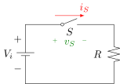
When S is ON
When S is OFF
\(\begin{cases}v_S = 0 \\ i_S = i_R = \color{green} \displaystyle\frac{V_{i}}{R}\end{cases}\)
\(\begin{cases}v_S = V \color{green} = V_{i} \\ i_S = 0\end{cases}\)
Under ideal case
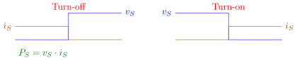
In practical application
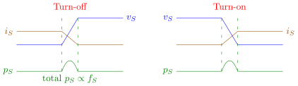
\(\boxed{\textbf{Soft-switching}}\) (to eliminate \(\underset{\text{switching}}{\underline{\text{turn-off \& turn-on}}}\) losses)
Turn-off
Turn-on
① Shift \(v_S\) to right
① Shift \(i_S\) to right
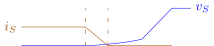
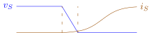
Capacitor in parallel with \(S\)
Inductor in series
② Decrease \(i_S\) to 0 in advance
② Decrease \(v_S\) to 0 in advance
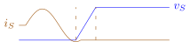
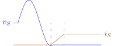
LC resonance
LC resonance
\(\boxed{\textbf{LC resonant circuit}}\)
KVL:
\(\begin{cases}\cancel{L}\, \displaystyle\frac{di_L}{dt} = \frac{V_i-v_C}{L} \\ \cancel{C}\, \displaystyle\frac{dv_C}{dt} = \frac{i_L}{C}\end{cases}\)
L.T.
\(\begin{cases}sL \cdot I_L(s) = \displaystyle\frac{1}{s} \cdot V_i - V_C(s) \\ sC \cdot V_C(s) = I_L(s)\end{cases} \qquad \color{red} \mathcal{L}\left[\displaystyle\frac{df(t)}{dt}\right] = sF(s) - \cancelto{0}{f(0)}\)
\(\begin{cases}I_L(s) = \displaystyle\frac{V_i}{L} \cdot \frac{1}{s^2+\frac{1}{LC}} \\ V_C(s) = \displaystyle\frac{1}{s} \cdot V_i - V_i \cdot \frac{1}{s^2+\frac{1}{LC}}\end{cases} \quad \color{green} \overset{\text{inverse L.T.}}{\implies} \quad \begin{cases}i_L(t) = \displaystyle\frac{V_i}{\sqrt{L/C}} \cdot \sin \sqrt{\frac{1}{LC}} t \\ v_C(t) = V_i - \displaystyle V_i \cdot \cos \sqrt{\frac{1}{LC}} t\end{cases}\)
\[\dot{X} = AX + BU\] \[\begin{bmatrix}\dot{i}_L \\ \dot{v}_C\end{bmatrix} = \color{red}\underset{A}{\underbrace{\color{black}\begin{bmatrix}0 & -\displaystyle\frac{1}{L} \\ \displaystyle\frac{1}{C} & 0\end{bmatrix}}} \color{black} \begin{bmatrix}i_L \\ v_C\end{bmatrix} + \begin{bmatrix}\displaystyle\frac{1}{L} \\ 0\end{bmatrix} V_i\]
eigenvalues of \(A\) are poles of T.F.
\[\begin{align*} \lvert \lambda I - A \rvert &= 0 \\ \left\lvert \begin{array}{cc} \lambda & \displaystyle\frac{1}{L} \\ \displaystyle-\frac{1}{C} & \lambda \end{array} \right\rvert &= 0 \\ \lambda^2 + \frac{1}{LC} &= 0 \implies \lambda_{1,2} = \pm \color{red}\underline{\underline{\color{black} \sqrt{\frac{1}{LC}}}} \color{black} \cdot i \end{align*}\]
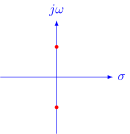
E.g. Zero-current Switching (Buck)
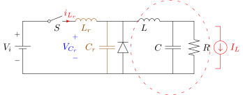
- Before \(t_0\):
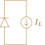
\(\color{red}\begin{cases}i_{L_r} = 0 \\ \color{blue} v_{C_r} = 0\end{cases}\)
- \(t_0 \sim t_1\): \(S\) is turned ON, \(i_{L_r}\) increases from 0 to \(I_L\).
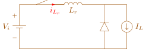
\(\color{red}\begin{cases} \displaystyle\frac{di_{L_r}}{dt} = \frac{V_i}{L_r} \\ \color{blue} v_{C_r} = 0\end{cases}\)
- \(t_1 \sim t_2\): when \(i_{L_r}\) reached \(I_L\), \(D\) is off. \(L_r C_r\) starts resonating.
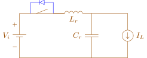
\(\color{red}\begin{cases} \displaystyle\frac{di_{L_r}}{dt} = \frac{V_i-V_{C_r}}{L_r} \\ \color{blue} \displaystyle\frac{dv_{C_r}}{dt} = \frac{i_{L_r}-I_L}{C_r}\end{cases}\)
\(\begin{cases}i_{L_r} = I_L + \displaystyle\frac{V_i}{\sqrt{L_r/C_r}}\cdot \sin \sqrt{\frac{1}{L_r C_r}} t \\ v_{C_r} = V_i - V_i \cdot \cos \sqrt{\frac{1}{L_r C_r}} t\end{cases}\)
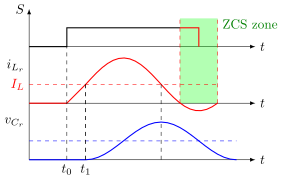